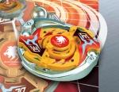

Death Gargoyle MS
| Death Gargoyle MS (Metal Scream) | |
|  | |
| Number: | MA-04 |
|---|---|
| System: | HMS |
| Type: | Balance |
Contents
| Languages: English|français|italiano |
Name Changes
Death Gargoyle MS was released by Hasbro as Dark Effigy MS.
Bit Protector (BP): Gargoyle Emblem
The Bit Protector of this Beyblade is Gargoyle Emblem. It is the first mould version of Bit Protectors.
Attack Ring (AR): Circle Upper
- Weight: 20 grams
Circle Upper is one of the most useful ARs available. This usefulness is due to the unique shape of its Metal Frame; it is an almost perfect circle shape that completely surrounds the outside of the AR, with two large, deep slopes on either side that are used for Upper Attack. Although it has some Smash Attack ability and Force Smash in left spin, these traits are negligible when compared to the effectiveness of its Upper Attack.
Because of the round shape of Circle Upper, many hits will not be incredibly effective against it. There are very few points of contact for another AR to latch onto during a hit, generally causing the Beyblade attacking Circle Upper to take the majority of the damage.
Circle Upper is the second widest HMS AR available (The widest being Samurai Changer MS's Samurai Upper) Because of this, it has one of the widest attack range of all HMS ARs. While not as much of an advantage in Tornado Balance Type S, in wider stadiums where making early contact is crucial, the extra range can mean the difference between winning or losing.
A point of note is the weight distribution on Circle Upper; because there is no metal near the center, only along the outside rim, all of the weight is focused there. This will generally lead to an AR with poor balance, and placing it on a tall RC will cause wobbling. However, there are two ways to negate this disadvantage:
- The most popular combos with Circle Upper generally use very low RCs, e.g. Dragoon MS's Grip Flat Core, so the poor balance is generally not an issue.
- There are combos you can build where this poor balance can be used as an advantage, which is discussed on this page.
In contrast to the Metal Frame, the ABS Caul mostly serves to be a cradle for the Bit Protector. Most of the contact with the opposing Beyblade will be with the Metal Frame, another one of Circle Upper's great advantages.
Circle Upper has very few disadvantages and many advantages, and this is why it is one of the most-used ARs of all time.
Mould Differences
There was a change made to the mould of Circle Upper's Metal Frame. The change was first employed at the release of HMS Random Booster ACT 3, and was also released by Hasbro. The second mold has a Metal Frame that is reinforced along the entire Upper Attack slope. The result is that it is significantly thicker and weighs more. This does alter the balance so that it is even more prone to wobbling. The previous mould is lighter and has better Survival capability. These moulds are referred to as "first mould" and "second mould", respectively. You can select one or the other depending on your strategy.
Use in Upper Attack Customization
Death Gargoyle MS's Circle Upper and Samurai Changer MS's Samurai Upper dominated as the top choice ARs for Attack-types. This style of combo can be used effectively to defeat Survival types such as Wolborg MS in many stadiums.
- AR: Circle Upper (Death Gargoyle MS)
- WD: Circle Wide
- RC: Grip Flat Core (Ultimate Version) (Dragoon MS UV)
Use in Wobbling Customization
While wobbling is a strategy that is often difficult to implement effectively, this is one of the few ARs that makes it a viable strategy. You can combine it with a Survival-type core to beat other Survival-types. The Smash Attack gained from Wobbling, along with Circle Upper's innate Upper Attack and the Survival capabilities of its round shape make this a good strategy to attempt.
- AR: Circle Upper (Death Gargoyle MS)*
- WD: Circle Wide
- RC: Bearing Core (Wolborg MS)
*Select the first mould Circle Upper for more Survival ability, or the second mould for more Attack ability.
The second mould of Circle Upper's Metal Frame is the same Metal Frame used in Samurai Changer MS.
Weight Disk (WD): Circle Heavy
See Circle Heavy.
Running Core (RC): Metal Change Core
- Weight: 3 grams
Metal Change Core has its roots early in the life of Beyblade, with the first incarnation being Driger S's SG Metal Change Base. Since then, the tip was also used in Driger V2 and Gigars, but the Metal Change Core has the best implementation of it to date.
The design of the Metal Change Core is that there is a small metal tip on the end. At the very center of the tip it comes to a point, and all of the area of the tip surrounding the point is broad and flat. If the Beyblade is level to the angle of the stadium, it stands on the sharp tip and is stationary (Survival mode). If the Beyblade is on an angle to the stadium, it will stand on the broad portion of the tip and move quickly around the stadium (Attack mode). Metal Change Core's Attack mode is about the same speed as Advance Striker's Metal Flat Core.
Another great advantage of Metal Change Core is its size. Its low height compliments the function of Circle Upper very well by allowing it to get under the opposing Beyblade and perform Upper Attack.
Using Metal Change Core With Sliding Shoot
When you shoot Metal Change Core using Sliding Shoot, the Beyblade will move in a flower pattern through the center of the stadium, switching between Attack and Survival. This works very well for beating Beyblades that spend most of their time at the center of the stadium.
Use in Compact Customization
Metal Change Core is a short, small part with both the sharpest tip available and the ability to move very quickly for Attack-mode. This makes it the perfect candidate for a Compact combo.
- AR: Metal Ape (Magical Ape MS)
- WD: CWD Defense Ring (Sea Dragon)
- RC: Metal Change Core (Death Gargoyle MS)
Use in Upper Attack Customization
Upper Attack combos work very well with high spin velocity parts. The same attributes that make this part a perfect candidate for Compact customization also apply to Upper Attack. Although Death Gargoyle MS uncustomized can work fine for this, you can also try this combo for something with more Survival and spin velocity.
- AR: Advance Attacker (Advance Striker)
- WD: CWD Defense Ring (Sea Dragon)
- RC: Metal Change Core (Death Gargoyle MS)
Other Versions
- Death Gargoyle MS - HMS Random Booster ACT 2 Version (Red)
- Death Gargoyle MS - HMS Random Booster ACT 3 Version (Purple)
- Death Gargoyle MS - HMS Random Booster ACT 3 Version (Light Blue)
Gallery
Death Gargoyle MS - Original Version
-
Hasbro sticker sheet
-
Circle Upper attack ring without stickers.
-
Circle Upper attack ring.
-
Hasbro Dark Effigy MS parts.
-
Top view
-
3/4 view
-
Side view
-
Bottom view
Death Gargoyle MS - Red Version
-
Red DEMS re-color from RBA2, top view.
-
Red DEMS re-color from RBA2, bottom view.
Overall
Death Gargoyle MS has been a long-standing favorite of Bladers simply due to its versatility. No part is wasted, and it can be used with great results either uncustomized or by using its parts with others. Death Gargoyle MS is Beyblade in many forms; you can use many playing styles simply with this Beyblade. It is also a great Beyblade to practice your shooting with. However, as great as all of it is, Circle Upper is simply one of the most powerful ARs ever made, and it is worth owning just for it. Every Blader should own multiples of this Beyblade.